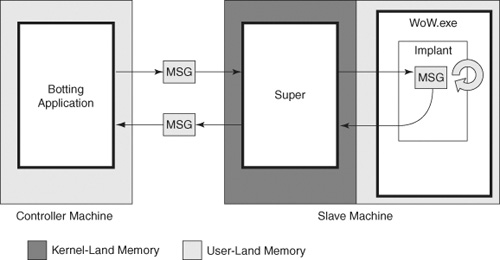
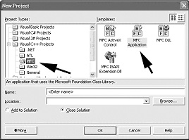
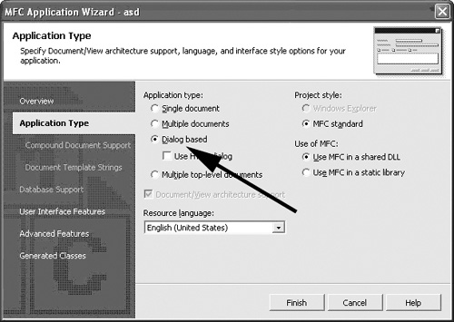
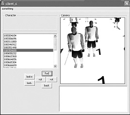

{% include JB/setup %}
{% raw %}
<div>
<a name="toppage" class="pcalibre calibre1"></a><table width="100%" border="0" cellspacing="0" cellpadding="0" class="sfbody"><tr valign="top" class="calibre2"><td class="calibre3"><a name="MainContent" class="pcalibre calibre1"></a><table width="95%" class="sfbody"><tr class="calibre2"><td class="pcalibre1 v"><!--Copyright (c) 2002 Safari Tech Books Online--><table width="100%" border="0" cellspacing="0" cellpadding="2" class="calibre4"><tr class="calibre2"><td valign="middle" class="v1 pcalibre1" height="5"></td></tr><tr class="calibre2"><td valign="middle" class="v1 pcalibre1"><table cellpadding="0" cellspacing="0" border="0" width="100%" class="calibre4"><tr class="calibre2"><td class="calibre6"><span class="calibre7"> </span>
                   
                  <span class="calibre7">   </span>
             <span class="calibre7"> </span></td></tr></table></td><td class="calibre8"/><td valign="middle" class="v2 pcalibre1"><a href="10061538.html" class="pcalibre calibre1"></a> 
           
          <span class="calibre7"><a target="_self" href="ch07lev1sec3.html" title="Previous section" class="pcalibre calibre1"></a></span>
				
				 
				
				<span class="calibre7"><a target="_self" href="ch07lev1sec5.html" title="Next section" class="pcalibre calibre1"></a></span></td></tr></table><div id="section" class="calibre15"><table width="100%" border="0" cellspacing="0" cellpadding="0" class="calibre4"><tr class="calibre2"><td valign="top" class="calibre8">Security Game Programming Networking Programming Greg Hoglund Gary McGraw Addison Wesley Professional Exploiting Online Games: Cheating Massively Distributed Systems<a name="ch07lev1sec4" class="pcalibre calibre1"></a>
<h3 id="643999-817" class="docSection1Title">Advanced Bot Topics</h3>
<p class="docText"><a name="iddle1105" class="pcalibre calibre1"></a><a name="iddle1161" class="pcalibre calibre1"></a><a name="iddle1241" class="pcalibre calibre1"></a><a name="iddle1612" class="pcalibre calibre1"></a><a name="iddle1634" class="pcalibre calibre1"></a><a name="iddle1635" class="pcalibre calibre1"></a><a name="iddle2032" class="pcalibre calibre1"></a>The remainder of the chapter is devoted to a number of new ideas that can be (and are being) applied to botting. First, we examine the use of kernel-mode support for a bot. We can make a bot much harder to detect by borrowing some technical ideas from rootkits. Second, we introduce the idea of building a bot that is simply a collection of helpful macros. Finally, we look at developing a user interface for an advanced bot program. While we're at it, we describe graphics interposition hacks in some detail.</p>
<a name="ch07lev2sec14" class="pcalibre calibre1"></a>
<h4 id="title-IDAQ5S2F" class="docSection2Title">Bots and Kernels</h4>
<p class="docText">As you might imagine, there is quite an arms race between botters and game companies, involving detection and remediation on the part of the game companies, and evasion and evolution on the part of bot developers. Like checkers or chess, the game involves one move at a time for each side, but unlike these simple games, there is no clear end in sight.</p>
<p class="docText">Based on the state of this continual arms race between detection and antidetection, the ultimate step in the evolution of bots emerged—kernel-level stealth of the sort that rootkits use.<sup class="docFootnote"><a class="pcalibre6 pcalibre5 calibre1" href="#ch07fn02">[2]</a></sup> The fact is, most games don't include any sort of kernel-mode protection, although that is changing with programs like nProtect GameGuard &lt;<a class="pcalibre6 pcalibre5 calibre1" target="_blank" href="http://eng.nprotect.com/nprotect_gameguard.htm">http://eng.nprotect.com/nprotect_gameguard.htm</a>&gt; and PunkBuster &lt;<a class="pcalibre6 pcalibre5 calibre1" target="_blank" href="http://www.punkbuster.com/index.php">http://www.punkbuster.com/index.php</a>&gt;.</p><blockquote class="calibre24"><p class="docFootnote1"><sup class="calibre31"><a name="ch07fn02" class="pcalibre calibre1">[2]</a></sup> We won't be describing rootkits and rootkit evolution in detail in this book. See <span class="docEmphasis">Rootkits</span> by Greg Hoglund and James Butler (Addison-Wesley, 2005) for more.</p></blockquote>
<p class="docText">We now present a general architecture for a kernel-mode assisted bot.</p>
<a name="ch07lev3sec5" class="pcalibre calibre1"></a>
<h5 id="title-IDAYQG0C" class="docSection3Title">General Architecture of a Kernel-Assisted Bot</h5>
<p class="docText">The first design decision we made was to determine that the only component that would execute on the game machine would be the kernel driver. Our reasoning is that without access to the kernel, a game client won't be able to scan for our code. By keeping everything out of user process space, we attain one level of stealth beyond normal bot approaches.</p>
<p class="docText">To make this move, we had to move all bot application functionality to another machine and set up a communications channel. The resulting bot architecture consists of several components (<a class="pcalibre6 pcalibre5 calibre1" href="#ch07fig07">Figure 7-7</a>).</p>
<a name="ch07fig07" class="pcalibre calibre1"></a><p class="calibre28"><center class="calibre29">
<h5 class="docFigureTitle">Figure 7-7. The architecture of a kernel-mode bot. Kernel-mode bots are among the most sophisticated hacks in existence today for online games.</h5>
</center></p><p class="docText"><div class="v8 pcalibre3 pcalibre2"><a target="_blank" href="fig07-07_alt.jpg" class="pcalibre calibre20">[View full size image]</a></div></p>
<br class="calibre15"/>
<p class="docText">The controller machine is the computer that runs the logic and scripts that drive the bot. The slave machine is the computer running the game (in this example, <tt class="calibre38">WoW.exe)</tt> as well as a kernel-mode driver called supervisor (shown as "Super" in the figure). Message traffic is passed over the TCP/IP network between the two machines. On the slave machine, an implant is placed into the <tt class="calibre38">WoW.exe</tt> process, but it's a very simple tap that isn't connected to any loaded or injected DLL or thread, making it particularly <a name="iddle1007" class="pcalibre calibre1"></a><a name="iddle1055" class="pcalibre calibre1"></a><a name="iddle1119" class="pcalibre calibre1"></a><a name="iddle1124" class="pcalibre calibre1"></a><a name="iddle1302" class="pcalibre calibre1"></a><a name="iddle1385" class="pcalibre calibre1"></a>difficult to scan for. Furthermore, kernel-level memory cloaking hides the memory from user space, so that even a generic scan of all memory will not reveal the implant.</p>
<p class="docText">It turns out that the implant is the key to the whole system. For <tt class="calibre38">WoW.exe</tt> in particular, the implant is responsible for executing a special byte-code language. So, in many ways, the implant is a virtual machine, similar in nature to (although far less robust than) a Java virtual machine. The implant is designed to execute a general-purpose instruction set, just like a virtual CPU.</p>
<p class="docText">Developing the supervisor botting system took many months and required the use of some extremely low level tools, many of which had to be developed before the actual botting work began. For example, developing a debugger framework for use in the kernel is made difficult by the fact that you can't debug your own code—that is, you can't really run a debugger against it because you would be debugging a debugger (if that makes any sense!). Hoglund delivered a technical presentation on this technology at the Black Hat conference in 2006.<sup class="docFootnote"><a class="pcalibre6 pcalibre5 calibre1" href="#ch07fn03">[3]</a></sup></p><blockquote class="calibre24"><p class="docFootnote1"><sup class="calibre31"><a name="ch07fn03" class="pcalibre calibre1">[3]</a></sup> "Hacking World of Warcraft: An Exercise in Advanced Rootkit Design," by Greg Hoglund, 2006 &lt;<a class="pcalibre6 pcalibre5 calibre1" target="_blank" href="http://www.rootkit.com/vault/hoglund/GregSlidesWoWHack.rar">http://www.rootkit.com/vault/hoglund/GregSlidesWoWHack.rar</a>&gt;.</p></blockquote>
<a name="ch07lev2sec15" class="pcalibre calibre1"></a>
<h4 id="title-IDARUG0C" class="docSection2Title">A New Bot Paradigm: Combat Assist Bots</h4>
<p class="docText">There are many kinds of bots. Possibly the most popular kind of bot category is the away-from-keyboard combat bot. As we describe in <a class="pcalibre6 pcalibre5 calibre1" href="ch02.html#ch02">Chapter 2</a>, AFK combat is a great way to build experience points from repetitive kills. You may recall that this is also known as grinding.</p>
<p class="docText">AFK botting involves several challenges, not the least of which are moving through the game (called pathing) and exhibiting behavior with some kind of artificial intelligence. In this section, we introduce a new botting paradigm for games such as WoW and other turn-based MMOs.</p>
<p class="docText">Before MMOs, FPSs were heavily botted. The primary kind of bot for an FPS is called an aimbot—basically, a bot that assists you in pointing your weapon at someone while fighting. The same concept can be applied to turn-based MMOs, except that instead of aiming, our new bot manages the complex set of actions required to maximize damage while taking as little damage as possible. The bot we describe here applies to WoW, of course, but the concept is highly portable.</p>
<p class="docText"><a name="iddle1216" class="pcalibre calibre1"></a>The Combat Assist bot maintains a list of opponent players, derived using a technique similar to the one used to compute the mob list earlier in this chapter. A script manages actions while the PC fights battles in PvP. The idea can easily extend to player versus environment combat as well (fighting NPC monsters).</p>
<p class="docText">The architecture is such that a series of functions in the script are called for specific things:</p>
<ul class="calibre18"><li class="calibre19"><p class="docText">One function for each opponent type</p></li><li class="calibre19"><p class="docText">One function for each event type occurring to the PC in two categories:</p><ul class="calibre80"><li class="calibre19"><p class="docText">Taking damage</p></li><li class="calibre19"><p class="docText">Casting spells or effects</p></li></ul></li></ul>
<p class="docText">A single global data state represents the PC. The script could look something like what we present here, and players can set up various assist profiles for each of their characters.</p>
<div class="docText1"><pre class="calibre43">ASSIST( character name )
{
</pre></div><br class="calibre15"/>
<p class="docText">What follows is a set of callback functions called for different event types.</p>
<div class="docText1"><pre class="calibre43">       OnActivate()
       {
         // called when the assist script
         // is activated or deactivated
       }
</pre></div><br class="calibre15"/>
<p class="docText">The basic timer is used for any general-purpose state processing the PC may need, such as maintaining buffs.<sup class="docFootnote"><a class="pcalibre6 pcalibre5 calibre1" href="#ch07fn04">[4]</a></sup></p><blockquote class="calibre24"><p class="docFootnote1"><sup class="calibre31"><a name="ch07fn04" class="pcalibre calibre1">[4]</a></sup> A buff is an effect such as a magic spell that adds strength to a character with an associated time period. Maintaining buffs involves keeping track of the time periods in order to keep the spell in effect.</p></blockquote>
<div class="docText1"><pre class="calibre43">       OnTimer()
       {
</pre></div><br class="calibre15"/>
<p class="docText">The preset variable <tt class="calibre38">ME</tt> represents the PC.</p>
<div class="docText1"><pre class="calibre43">        // called once per second, to manage all buffs
        if( ME.Buffs.Has( "Concentration Aura" ) )
        {
        }
        else
        {
</pre></div><br class="calibre15"/>
<p class="docText">The <tt class="calibre38">Cast</tt> command is used to cast a named spell or ability.</p>
<div class="docText1"><pre class="calibre43">          Cast( "Concentration Aura" );
        }
       }
</pre></div><br class="calibre15"/>
<p class="docText">We can use the damage metering function to detect whether the current rate of damage is large and whether a subsequent death will occur if the PC does not cast a protection spell.</p>
<div class="docText1"><pre class="calibre43">       OnDamage()
       {
         // called when taking damage
         if(RATE &gt; 50%)
         {
           // RATE is a % of damage, measured against
           // total hitpoints, taken in the last second

           Cast( "Divine Shield" ); // cast a spell
           RETURN;
         }

         if(ME.Health &lt; 20%)
         {
           TargetSelf();
           Cast( "Holy Light" );
           TargetLastTarget();
         }
       }
</pre></div><br class="calibre15"/>
<p class="docText">The following function is just an example. The callbacks here occur one after the other for each opponent type. If there are three opponents in range, the callback is called once for each of the opponents (i.e., three times). Ultimately, you need a callback for each opponent type.</p>
<div class="docText1"><pre class="calibre43">       ForHunter()
       {
         // called for any opponent who is of the Hunter class
</pre></div><br class="calibre15"/>
<p class="docText">While in callback, if the player has targeted the opponent in question, then certain attack steps need to happen.</p>
<div class="docText1"><pre class="calibre43">         if(ME.Target == HUNTER)
         {
           if(RANGE &lt; 30)
           {
</pre></div><br class="calibre15"/>
<p class="docText">The following pseudocode illustrates what a Paladin character might need to do to set up for maximum damage.</p>
<div class="docText1"><pre class="calibre43">             if(ME.Buffs.Has("Seal of Crusader"))
             {
               Cast("Judgement");
               Cast("Seal of Command");
             }

             EnsureMeleeMode();

             if(ME.Buffs.Has("Seal of Command"))
             {
</pre></div><br class="calibre15"/>
<p class="docText">The following check would allow a Judgement spell to be cast if there is enough mana and the Seal of Command has less than 10 seconds left.</p>
<div class="docText1"><pre class="calibre43">               if(ME.Mana &gt; 10%)
               {
                 if(ME.Buffs.TimeLeft(
                        "Seal of Command") &lt; 10)
                 {
                   Cast("Judgement");
                   Cast("Seal of Command");
                 }
               }
             }
           }
           else
           {
           if(ME.Mana &gt; 60%)
             CastIfNotBuffed( "Seal of Crusader" );
           }
         }
       }
</pre></div><br class="calibre15"/>
<p class="docText"><a name="iddle1175" class="pcalibre calibre1"></a><a name="iddle2200" class="pcalibre calibre1"></a>Some opponents have pets, so you can use this callback to deal with the pet. In this case, the script would automatically stun the pet and inform the player that the Hunter is the priority target.</p>
<div class="docText1"><pre class="calibre43">       ForHunterPet()
       {
         // called for any Hunter's pet

         // RANGE in meters between character and the pet
         if(RANGE &lt; 10)
         {
           // pet is close
           if( PET.Target == ME OR PET.Owner.Target == ME )
           {
             // this opponent is going for us
             // stun the pet and go for the opponent
             Target(PET);
             Cast( "Hammer of Justice" );

             // set target with priority 5
             PriorityTarget(PET.Owner, 5);
             SelfMessage(" GO FOR THE HUNTER ");
           }
         }
       }
</pre></div><br class="calibre15"/>
<p class="docText">You can set up similar callbacks for other opponent types. Of course, this is only one potential architecture for the system. The impetus for this design is that each particular opponent type requires a different combat strategy.</p>
<div class="docText1"><pre class="calibre43">       ForMage()
       {
       }

       ForWarlock()
       {
       }

       //etc...
</pre></div><br class="calibre15"/>
<a name="ch07lev2sec16" class="pcalibre calibre1"></a>
<h4 id="title-IDAJ1G0C" class="docSection2Title">Bot User Interface</h4>
<p class="docText">The basic guts of the debugger bot design just described include a number of very powerful techniques, but they're not exactly user friendly. If we want our bot to be more useful, we need to add some kind of interface to it. In <a name="iddle1001" class="pcalibre calibre1"></a><a name="iddle1584" class="pcalibre calibre1"></a><a name="iddle1790" class="pcalibre calibre1"></a><a name="iddle1922" class="pcalibre calibre1"></a><a name="iddle1923" class="pcalibre calibre1"></a><a name="iddle1936" class="pcalibre calibre1"></a><a name="iddle2146" class="pcalibre calibre1"></a>this section, we introduce the concept of a dialog-based application to control and wield a bot.</p>
<p class="docText">Our approach is to create a simple Microsoft Foundation Class (MFC) Dialog application. You can create one automatically by using Microsoft's Visual Studio Application Wizard (<a class="pcalibre6 pcalibre5 calibre1" href="#ch07fig08">Figure 7-8</a>).</p>
<a name="ch07fig08" class="pcalibre calibre1"></a><p class="calibre28"><center class="calibre29">
<h5 class="docFigureTitle">Figure 7-8. Using Microsoft Visual Studio, you can create a basic MFC dialog application like this.</h5>
</center></p><p class="docText">
</p>
<br class="calibre15"/>
<p class="docText">Once you have instantiated the MFC dialog app, you can add various controls to do such things as display lists of world objects, add buttons to control behavior, and so on. <a class="pcalibre6 pcalibre5 calibre1" href="#ch07fig09">Figure 7-9</a> shows how this is done. Using this prefab functionality is a very convenient way to interface to the bot and to the game.</p>
<a name="ch07fig09" class="pcalibre calibre1"></a><p class="calibre28"><center class="calibre29">
<h5 class="docFigureTitle">Figure 7-9. Using the Application Wizard, you can add various capabilities to your dialog app. This is an easy way to make a sophisticated display for your bot.</h5>
</center></p><p class="docText"><div class="v8 pcalibre3 pcalibre2"><a target="_blank" href="fig07-09_alt.jpg" class="pcalibre calibre20">[View full size image]</a></div></p>
<br class="calibre15"/>
<a name="ch07lev3sec6" class="pcalibre calibre1"></a>
<h5 id="title-IDAR5G0C" class="docSection3Title">Integrating 3D Rendering</h5>
<p class="docText">Most online games use sophisticated 3D rendering to create a compelling world. If our bot program is going to keep up with the coolness factor of the game, it needs 3D rendering capability, too! This kind of capability is good for doing things like plotting the locations of various in-game objects as you track them. You can even go so far as to create a completely new user interface for the game (for more on this, see the discussion of total conversions in <a class="pcalibre6 pcalibre5 calibre1" href="ch09.html#ch09">Chapter 9</a>).</p>
<a name="ch07lev3sec7" class="pcalibre calibre1"></a>
<h5 id="title-IDAIAH0C" class="docSection3Title">The OGRE 3D Rendering Library</h5>
<p class="docText">Fortunately, there are a number of great graphics libraries that you can use for 3D game rendering (well, actually, for 3D rendering in general). That means you don't have to start from scratch. Among the best is the OGRE (Object-Oriented Graphics Rendering Engine), a C++ set of classes designed to make 3D graphics easier. For more about OGRE, including a GNU Lesser General Public License (LGPL) download, see &lt;<a class="pcalibre6 pcalibre5 calibre1" target="_blank" href="http://www.ogre3d.org/">http://www.ogre3d.org/</a>&gt;.</p>
<p class="docText">We're happy to report that the OGRE rendering library is very easy to use. Using OGRE, we built a simple client interface that can plot the locations of objects in a 3D world. <a class="pcalibre6 pcalibre5 calibre1" href="#ch07fig10">Figure 7-10</a> shows what a basic OGRE rendering can look like.</p>
<a name="ch07fig10" class="pcalibre calibre1"></a><p class="calibre28"><center class="calibre29">
<h5 class="docFigureTitle">Figure 7-10. Using OGRE, we can create a rudimentary 3D interface for objects in a virtual world.</h5>
</center></p><p class="docText">
</p>
<br class="calibre15"/>
<p class="docText">The code below uses the OGRE package to do some basic rendering in a 3D virtual world. We have integrated comments into the code, as usual.</p>
<div class="docText1"><pre class="calibre43">#include "Ogre.h"
#include "OgreConfigFile.h"
#include "OgreKeyEvent.h"
#include "OgreEventListeners.h"
#include "OgreStringConverter.h"
#include "OgreException.h"
#include &lt;map&gt;

using namespace Ogre;
</pre></div><br class="calibre15"/>
<div class="docText1"><pre class="calibre43">RenderWindow *          m_renderwindow;
Root *                  m_root;
Camera *                m_camera;
RenderSystem *          m_RenderSystem;
SceneManager *          m_sceneMgr;
Viewport *              m_viewport;

Entity *                m_miner;
Entity *                m_bldg;

void Init(HWND hWindow);
void Update();
void Kill();
void UpdateObjectPosition( DWORD id, POINT p);

void MoveCamera( float distance );
void RotateCamera( float degrees );
void PitchCamera( float degrees );
void LookAt( int id );

BOOL selectRenderingPlugin( char *theName );
void loadResources();
void createDebugObjectsInScene();
void createPlane();

std::map&lt;DWORD, SceneNode *&gt; g_points;
</pre></div><br class="calibre15"/>
<p class="docText">The code we show below requires that you pass in a parent window handle. If you create an MFC Dialog application as we discuss earlier, you can obtain the handle you need for the dialog box as the <tt class="calibre38">m_hWnd</tt> member. The code below creates an OGRE rendering window and places it on the parent window. This is how we created <a class="pcalibre6 pcalibre5 calibre1" href="#ch07fig10">Figure 7-10</a>.</p>
<div class="docText1"><pre class="calibre43">void Init(HWND hWindow)
{
</pre></div><br class="calibre15"/>
<p class="docText">OGRE requires a Root object to be created first.</p>
<div class="docText1"><pre class="calibre43">       m_root = new Root("",""); //root without config files</pre></div><br class="calibre15"/>
<p class="docText">We now load the two graphics subsystems and try to use OpenGL.</p>
<div class="docText1"><pre class="calibre43">       m_root-&gt;loadPlugin("RenderSystem_Direct3D9");
       m_root-&gt;loadPlugin("RenderSystem_GL");

       // use the openGL renderer
       if(FALSE == selectRenderingPlugin("OpenGL")) return;
</pre></div><br class="calibre15"/>
<p class="docText">After calling <tt class="calibre38">initialise</tt> (can you tell that the authors of OGRE are European?), we next load the resources. Resources are the meshes and textures used in the scene. You can download many tools from the Net that support translating objects into OGRE mesh files.</p>
<div class="docText1"><pre class="calibre43">       m_root-&gt;initialise(false);
       loadResources();
</pre></div><br class="calibre15"/>
<p class="docText">Next we create the rendering window. Although OGRE manages it, we obtain its actual window handle using <tt class="calibre38">getCustomAttribute</tt>. After we get the handle, we use <tt class="calibre38">SetWindowLong( )</tt> to change its style to <tt class="calibre38">WS_CHILD</tt>.</p>
<div class="docText1"><pre class="calibre43">       m_renderwindow =
              m_root-&gt;createRenderWindow(
                     "theCamera",
                     280,  //width
                     290,  //height
                     false,  //fullscreen or not
                     0 );  //optional
       // dirty tricks to make it a child window
       HWND aHandle;
       m_renderwindow-&gt;getCustomAttribute(
              "HWND",
              &amp;aHandle);

       SetParent(aHandle, hWindow);
       SetWindowLong(
              aHandle,
              GWL_STYLE,
              WS_CHILD | WS_BORDER | WS_VISIBLE );
</pre></div><br class="calibre15"/>
<p class="docText">Now we get the <tt class="calibre38">SceneManager</tt>. The <tt class="calibre38">SceneManager</tt> is a very important object in OGRE, as it manages all 3D objects directly.</p>
<div class="docText1"><pre class="calibre43">       m_sceneMgr = m_root-&gt;getSceneManager( ST_EXTERIOR_CLOSE );
</pre></div><br class="calibre15"/>
<p class="docText">Now we create a camera. The camera can be moved around, changing the perspective and viewpoint. We use the camera metaphor to look at various objects.</p>
<div class="docText1"><pre class="calibre43">       m_camera = m_sceneMgr-&gt;createCamera("MainCam");
       m_camera-&gt;setNearClipDistance(1.0f);
       m_camera-&gt;setFarClipDistance(50000.0f);
</pre></div><br class="calibre15"/>
<p class="docText">As part of the process, we also need to create a viewport for the camera.</p>
<div class="docText1"><pre class="calibre43">       m_viewport = m_renderwindow-&gt;addViewport(m_camera);
       m_camera-&gt;setAspectRatio(
              Real( m_viewport-&gt;getActualWidth()) /
              Real(m_viewport-&gt;getActualHeight()));
</pre></div><br class="calibre15"/>
<p class="docText">Finally, we can load some meshes and place some objects in the world.</p>
<div class="docText1"><pre class="calibre43">       // load the default objects
       m_miner = m_sceneMgr-&gt;createEntity("miner", "knot.mesh");
       m_miner-&gt;setMaterialName("MinerMaterial");

       m_bldg = m_sceneMgr-&gt;createEntity("bldg", "knot.mesh");
       createPlane();
       createDebugObjectsInScene();
}
void Kill()
{
       HWND aHandle;
       m_renderwindow-&gt;getCustomAttribute("HWND", &amp;aHandle);
       DestroyWindow(aHandle);
}

void Update()
{
       m_renderwindow-&gt;reposition( 260, 27 );
       m_renderwindow-&gt;resize( 280, 290 );
       m_renderwindow-&gt;update();
}

// for testing, create a debug object
void createDebugObjectsInScene()
{
       Entity* myKnot =
              m_sceneMgr-&gt;createEntity("knot", "knot.mesh");
       myKnot-&gt;setCastShadows(true);

  
       SceneNode* myNode1 =
              m_sceneMgr-&gt;getRootSceneNode()-&gt;
              createChildSceneNode( "node_1" );
       myNode1-&gt;attachObject(myKnot);

       // set the nodes position
       myNode1-&gt;setPosition( Vector3(0, 0, 0) );
       m_camera-&gt;setPosition( Vector3(0,300,0) );
       m_camera-&gt;lookAt( Vector3(0, 0, 0) );

       // Set ambient light
       m_sceneMgr-&gt;setAmbientLight(ColourValue(0.4, 0.4, 0.1));

       // Create a light
       Light* l = m_sceneMgr-&gt;createLight("MainLight");
       l-&gt;setType(Light::LT_POINT);
       l-&gt;setDiffuseColour( 200, 200, 200 );
       l-&gt;setPosition(30,30,30);
}
BOOL selectRenderingPlugin( char *theName )
{
       assert(m_root != NULL);

       // list them
       RenderSystemList *rList = m_root-&gt;getAvailableRenderers();
       RenderSystemList::iterator it = rList-&gt;begin();

       // example of iterating them
       while( it != rList-&gt;end() )
       {
         RenderSystem *rSys = *it;
         it++;
         if(rSys-&gt;getName().find(theName))
           {
             m_root-&gt;setRenderSystem(rSys);
             m_RenderSystem = rSys;
             break;
           }
       }

       // how to end if we can't find one
       if(m_root-&gt;getRenderSystem() == NULL)
       {
         assert(m_RenderSystem == NULL);
         return FALSE;
       }

       return TRUE;
}

void UpdateObjectPosition( DWORD id, POINT p)
{
       if( g_points.find(id) == g_points.end() )
       {
         char node_name[64];
         _snprintf(node_name, 62, "node_%d", id);

         // it was not found, create a new object
         SceneNode* a_node =
                m_sceneMgr-&gt;getRootSceneNode()-&gt;
                createChildSceneNode( node_name );
         Entity *e =
                m_sceneMgr-&gt;createEntity(node_name, "ninja.mesh");
         e-&gt;setMaterialName("MinerMaterial");

         a_node-&gt;attachObject(e);
         a_node-&gt;setPosition( Vector3(p.x, 0, p.y) );
         g_points[id] = a_node;
       }
       else
       {
         // it exists, so update its position
         SceneNode *a_node = (SceneNode *)g_points[id];
         a_node-&gt;setPosition( Vector3(p.x, 0, p.y) );
       }
}

void loadResources()
{
       ResourceGroupManager::getSingleton().addResourceLocation(
              "./media/models",
              "FileSystem",
              "General");

       ResourceGroupManager::getSingleton().addResourceLocation(
              "./media/scripts",
              "FileSystem",
              "General");

       ResourceGroupManager::getSingleton().addResourceLocation(
              "./media/textures",
              "FileSystem",
              "General");

       ResourceGroupManager::getSingleton().
              initialiseAllResourceGroups();
}

void MoveCamera( float distance )
{
       m_camera-&gt;moveRelative( Vector3( 0, 0, distance) );

       char _t[255];
       Vector3 v = m_camera-&gt;getPosition();
       _snprintf(_t, 252, "camera is %f %f %f", v.x, v.y, v.z );
       OutputDebugString(_t);
}

void RotateCamera( float degrees )
{
       m_camera-&gt;yaw( Radian(degrees) );

       char _t[255];
       Vector3 v =m_camera-&gt;getDirection();
       _snprintf(
              _t,
              252,
              "camera direction at %f %f %f",
              v.x, v.y, v.z );
        OutputDebugString(_t);
}

void PitchCamera( float degrees )
{
       m_camera-&gt;pitch( Radian(degrees) );

       char _t[255];
       Vector3 v =m_camera-&gt;getDirection();
       _snprintf(
              _t,
              252,
              "camera direction at %f %f %f",
              v.x, v.y, v.z );
       OutputDebugString(_t);
}

void createPlane()
{
       Plane plane;
       plane.normal = Vector3::UNIT_Y;
       plane.d = 0;
       MeshManager::getSingleton().createPlane(
              "plane_1",
              ResourceGroupManager::DEFAULT_RESOURCE_GROUP_NAME,
              plane,
              50000,
              50000,
              10,
              10,
              true,
              1,
              50,
              50,
              Vector3::UNIT_Z);

       Entity *aPlaneEntity_1 =
              m_sceneMgr-&gt;createEntity(
                     "e_plane_1",
                     "plane_1" );
       aPlaneEntity_1-&gt;setCastShadows(false);
       SceneNode *aSceneNode_1 =
              m_sceneMgr-&gt;getRootSceneNode() -&gt;
                     createChildSceneNode("n_plane_1");
       aSceneNode_1-&gt;attachObject(aPlaneEntity_1);
       aPlaneEntity_1-&gt;setMaterialName("PlaneMaterial");
       aSceneNode_1-&gt;setPosition( 0,-1000,0 );
}

void LookAt( int id )
{
       SceneNode *a_node = (SceneNode *)g_points[id];
       Vector3 v = a_node-&gt;getPosition();
       m_camera-&gt;setPosition( Vector3( v.x, v.y+500, v.z-200 ) );
       m_camera-&gt;lookAt( v );
}
</pre></div><br class="calibre15"/>
<p class="docText">Of course, your user interface can get quite complex, almost to the point of recreating a game client. In fact, as we already stated, some bots <span class="docEmphasis">are</span> complete client replacements.</p>
<p class="docText">The three advanced topics we introduce, kernel-mode bots, macro-derived bots, and bot user interfaces, demonstrate only three of many areas of active bot research and technology development. Perhaps botting requires a book of its own.</p>
<ul class="calibre18"></ul></td></tr></table><table width="100%" border="0" cellspacing="0" cellpadding="2" class="calibre4"><tr class="calibre2"><td valign="middle" class="v1 pcalibre1" height="5"></td></tr><tr class="calibre2"><td valign="middle" class="v1 pcalibre1"><table cellpadding="0" cellspacing="0" border="0" width="100%" class="calibre4"><tr class="calibre2"><td class="calibre6"><span class="calibre7"> </span>
                   
                  <span class="calibre7">   </span>
             <span class="calibre7"> </span></td></tr></table></td><td class="calibre8"/><td valign="middle" class="v2 pcalibre1"><a href="10061538.html" class="pcalibre calibre1"></a> 
           
          <span class="calibre7"><a target="_self" href="ch07lev1sec3.html" title="Previous section" class="pcalibre calibre1"></a></span>
				
				 
				
				<span class="calibre7"><a target="_self" href="ch07lev1sec5.html" title="Next section" class="pcalibre calibre1"></a></span></td></tr></table><table width="100%" border="0" cellspacing="0" cellpadding="2" class="calibre4"><tr class="calibre2"><td valign="top" class="calibre14"><span class="calibre7"></span></td></tr></table></div><!--IP User 2--></td></tr></table></td><td class="calibre3">
                         
                      </td></tr><tr class="calibre2"><td colspan="3" valign="bottom" class="calibre3"><br class="calibre15"/><p class="v5 pcalibre1"></p><br class="calibre15"/></td></tr></table></div>

{% endraw %}

